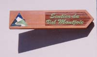

sentier du Val Montjoie (partie basse)

Départ : gare SNCF du Fayet (580 m)
Aller : 2,3 km, +267 et -40 m, 65 min
Retour : en car régulier SAT, de St Gervais au Fayet
Difficulté : E/EE
Période : mai - octobre
Remarque : à éviter par temps humide.
Bibliographie : fiche disponible à l’Office de Tourisme, Pierre Millon (sentiers du Vertige Hte Savoie n° 9 bis).
Traverser le parc de l’établissement thermal, franchir la passerelle devant les Thermes. Le sentier monte raide à une grande passerelle métallique (vue surplombante sur des cascades et leurs marmites) ; ne pas la traverser, revenir pour remonter vers des échelles. Au plateau, descendre pour traverser le Bon Nant et remonter à l’église de Saint Gervais (à visiter ; peu avant, supplément facultatif : AR au Pont du Diable).
C’est le début du sentier du Val Montjoie qui va jusqu’à Notre Dame de la Gorge (20 km, 286 mn).